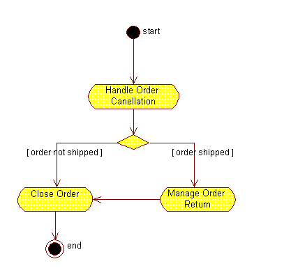
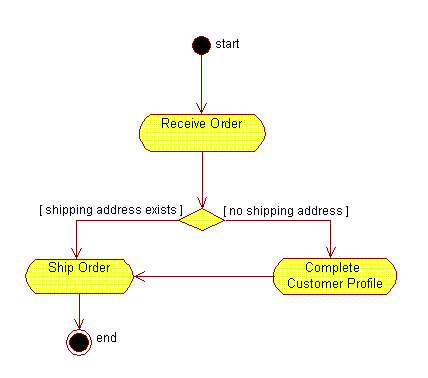
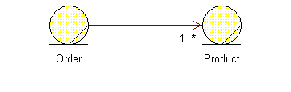
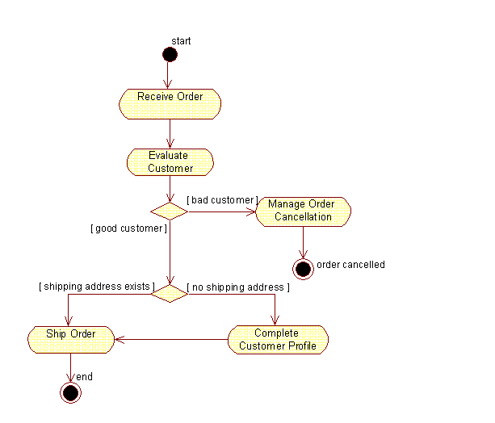
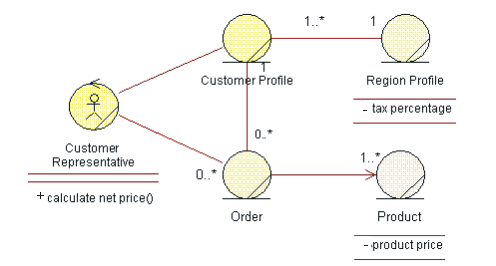

Artifacts >
Artifacts >
 Business Modeling Artifact Set >
Business Modeling Artifact Set >
 Business Rules >
Business Rules >
 Guidelines
Guidelines
Artifacts >
Business Modeling Artifact Set >
Business Rules >
Guidelines
Guidelines:
|
Business Rules |
The business rules are declarations of policies or conditions that must be satisfied. |
Business rules are kinds of requirements on how the business, including its business tools, must operate. They can be laws and regulations imposed on the business, but also express the chosen business architecture and style.
Business rules need to be rigorously and formally expressed so that they can form a basis for automation. An alternative would be to use the Object Constraint Language (OCL) as specified in the Unified Modeling Language. [RUM98]
Example:
You may want to express a limit to the size of a team, say less than ten members in a team. With the OCL, you can state this business rule as an invariant:
context Team inv:
self.numberOfMembers <= 10
However, you must consider that this formal type of language may be difficult to interpret for many of your stakeholders, so a more natural language style may be preferable. You can define a set of reserved expressions that you use to define the rules. Those expressions could be the same as those defined in [ODL98]:
Example:
In this less formal language, the example above would read:
IT MUST ALWAYS HOLD THAT the number of team members is less or equal to 10.
Rules could be classified in many ways, although it’s common is to separate them between constraint rules and derivation rules. [ODL98] Both categories can be further subdivided as described below:
- Stimulus and response rules constrain behavior by specifying when and if conditions must be true in order for behavior to be triggered.
- Operation constraint rules specify those conditions that must hold true before and after an operation to ensure that the operation performs correctly.
- Structure constraint rules specify policies or conditions about classes, objects, and their relationships that should not be violated.
- Inference rules specify that if certain facts are true, a conclusion can be inferred.
- Computation rules derive their results by way of processing algorithms, a more sophisticated variant of inference rules.
This classification of business rules is practical when explaining what business rules are, how to find them, and how to work with them, but there is no need to think of them as fixed groupings to which you always need to refer. Therefore, our template for the business rules artifact does not show this classification—in your project most likely there will be other groupings (by domain, by user, or by product group) that are a lot more valuable to show.
A business rule affects how your models look. It can also affect how you sequence activities in your activity diagram and it may even affect what associations you have between your business entities. Some rules are not easy to translate in straightforward way to the way a diagram looks—they may need to reside in the descriptions of the model elements.
Regardless, it is useful to show business rules as text notes, linked to the model element they affect in your diagram.
It is also useful to track business rules in the Requirements Attributes, for traceability and reporting purposes.
This kind of business rule affects the workflow of a business use case, and can be traced to the business use cases to which they apply. You may either show a conditional path, or an alternative path through the workflow. If the actions involved are less significant, it can be sufficient to let the evaluation of the business rule be enclosed in an activity state.
In the business object model, a rule of this kind could for example affect how you describe the lifecycle a business entity or it could be part of the description of an operation on a business worker.
Example:
In an order management organization, you may find the following rule:
WHEN an Order is cancelled
IF Order is not shipped
THEN close Order.
This business rule is reflected by showing two alternative paths in a workflow, and specifically using a decision and guard conditions on outgoing transitions.

The business rule in this case translates to an alternative path through the workflow
This type of business rule often translates to preconditions and postconditions of a workflow, or to a conditional or alternative path in a workflow. It can also be a performance goal or some other non-behavioral rule that should be traced to the business use cases to which it applies.
Example:
In an order management organization, you may find the following rule:
Ship Order to Customer
ONLY IF Customer has a shipping address.

The business rule translates to an alternative path in the workflow
Example:
Here’s another example of an operation constraint rule:
IT MUST ALWAYS HOLD THAT
All customer inquiries must be responded to within 24 hours of their receipt
This business rule would translate to a performance goal of a business use case. See the section on Performance Goal in Guidelines: Business Use Case.
This type of business rule affects relations between instances of business entities. They are expressed by the existence of an association between two business entities; sometimes as a multiplicity on the association.
Example:
In an order management organization, you may find the following rule:
IT MUST ALWAYS HOLD THAT
an Order refers to at least 1 Product.

This business rule translates to an association with the multiplicity of 1..*.
Inference rules often seem similar to stimulus and response, operation constraint or structure constraint types of rules; the difference is that there are a few steps that need to be thought through to arrive at the conclusion. The rule implies a method that needs to be reflected in an activity state of the workflow and eventually in an operation on a business worker or business entity.
Example:
You may have set up the following rule to determine a customer’s status:
A Customer is a Good Customer IF AND ONLY IF
the unpaid invoices sent to this Customer are less than 30 days old.

This business rule corresponds to an alternative path through the workflow, and the method prescribed will be part of the Evaluate Customer activity
Computation rules are like inference rules, the difference is that the method is more formal and looks like an algorithm. As with inference rules, this method needs to be traced to an activity in the workflow and, eventually, to an operation on a business worker or a business entity.
Example:
A computation rule can specify value computation:
The net price of a Product IS COMPUTED AS FOLLOWS
product price * (1+tax percentage/100).
Evaluating the net price could be part of the activity Ship Order as you produce the bill sent with the order. In the business object model, this rule translates to associations and operations.

The rule needs to be reflected as a method in the operation
calculate net price, but also implies a need for relationships between
classes in the model.
|
Rational Unified
Process
|